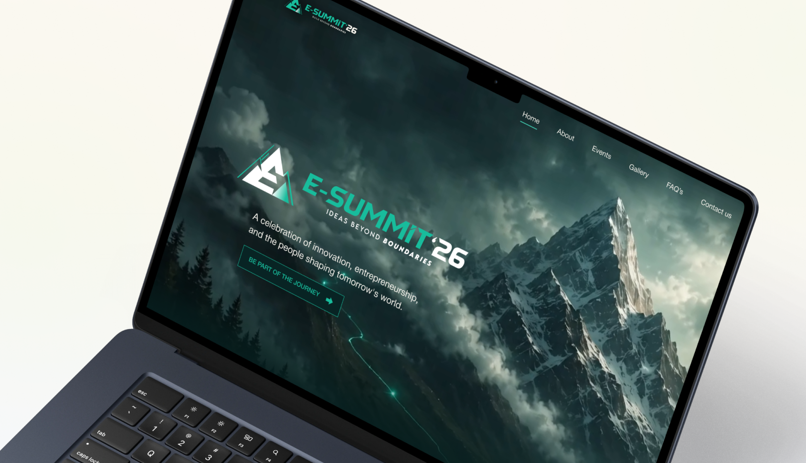
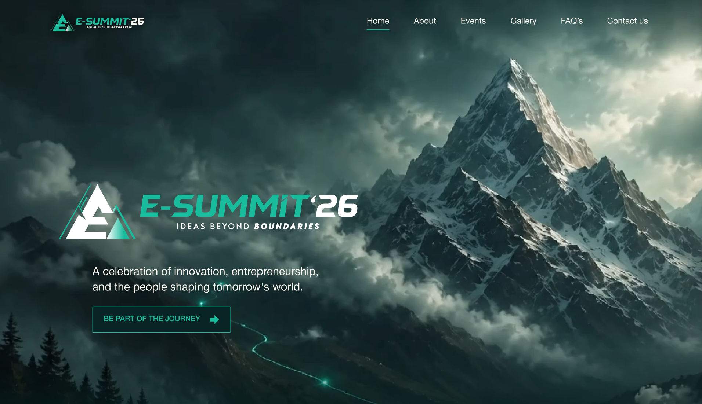
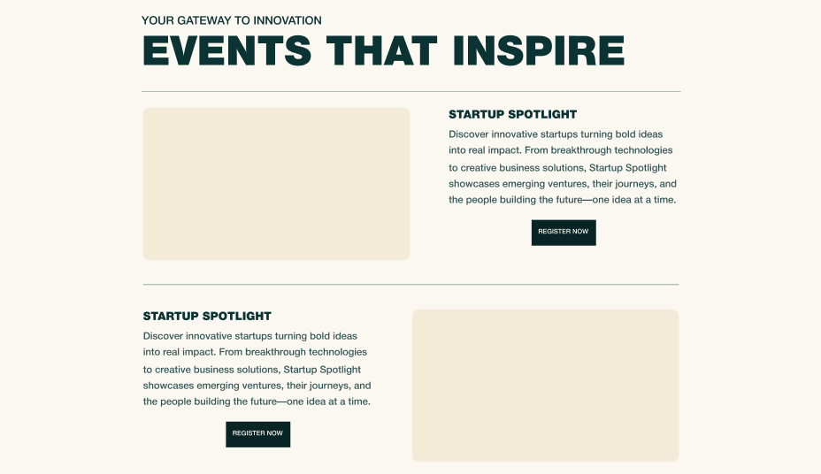
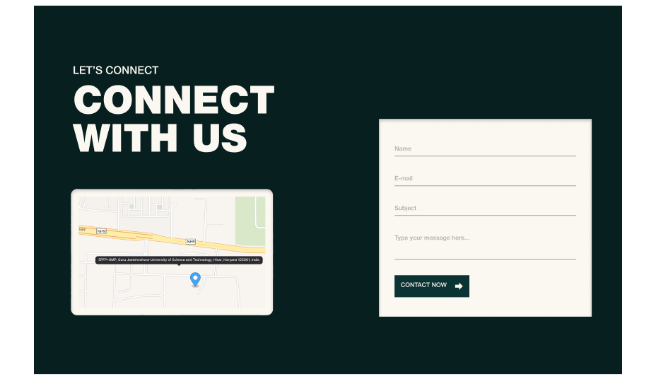
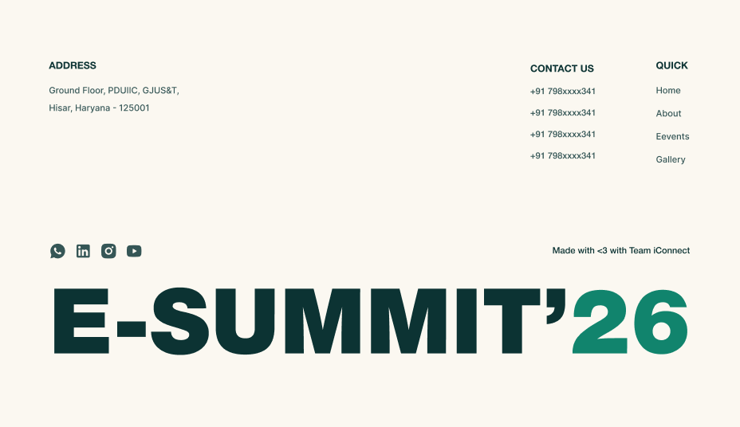

E-Summit '26
Event Website
Ideas Beyond Boundaries: a digital home for campus startup culture.
E-Summit '26 is the flagship entrepreneurship summit hosted by the iConnect Club, bringing together student founders, venture capitalists, industry speakers, and hackathons under one roof. I designed the end-to-end web experience around the theme "Ideas Beyond Boundaries".
Scattered schedules & disconnected forms
University summit websites often feel like afterthoughts, with competition rules spread across PDF links, speaker lineups buried, and registration sent to separate forms.
One clear, atmospheric event platform
A dark-mode editorial website with an atmospheric mountain-peak hero, event filtering, a scannable day-wise timeline, and a simple 2-step pass registration flow.

An atmospheric alpine hero with emerald-teal accents and a glowing dotted trajectory line that guides the eye straight to the main call-to-action.

Categorized cards for competitions, speaker panels, and networking sessions, with quick rulebook and prize previews.
A quick-scan accordion that answers common questions, so attendees don't need to ask the organizing team.


Venue details, key links, and direct contact routes, kept within easy reach at the bottom of every page.
Designing for real-world event momentum.
Designing for a live university summit taught me to balance atmospheric visual storytelling with a strict information hierarchy. When hundreds of students are browsing on the go, clear typography and unmistakable calls to action matter just as much as the hero visual.